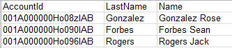
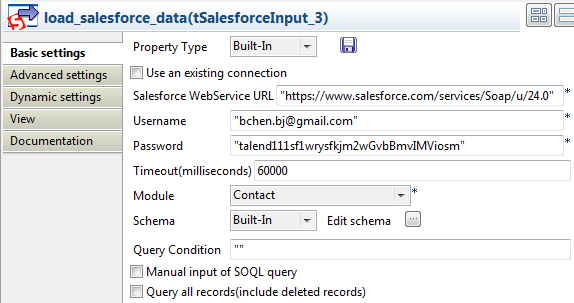
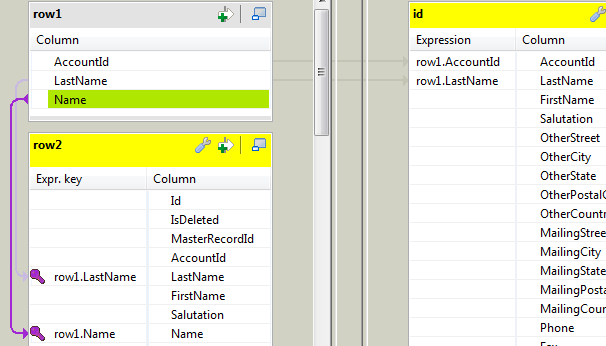

|
Famille de composant |
Business/Cloud | |
|
Fonction |
Le composant tSalesforceOutput écrit dans un objet de la base de données Salesforce via le service Web adéquat. | |
|
Objectif |
Ce composant permet d’écrire des données dans une base de données Salesforce. | |
|
Basic settings |
Property type |
Peut être Built-in ou Repository. |
|
|
|
Built-in : Propriétés utilisées ponctuellement. |
|
|
|
Repository : Sélectionnez le fichier où sont stockées les propriétés du composant. Les champs suivants sont alors pré-remplis à l’aide des données collectées. |
|
|
|
Cliquez sur cette icône pour ouvrir l’assistant connexion de base de données et enregistrer les paramètres de connexion que vous avez définis dans la vue Basic settings du composant. Pour plus d’informations sur comment définir et stocker des paramètres de connexion de base de données, consultez le Guide utilisateur de Talend Open Studio. |
|
|
Use an existing connection |
Cochez cette case et sélectionnez le composant de connexion adéquat à partir de la liste Component list pour réutiliser les paramètres d’une connexion que vous avez déjà définie. NoteLorsqu’un Job contient un Job parent et un Job enfant, la liste Component list présente uniquement les composants de connexion du Job du même niveau. |
|
|
Salesforce Webservice URL |
Saisissez l’URL du service Web permettant de se connecter à la base de données Salesforce. |
|
|
Username et Password |
Saisissez les informations d’authentification de l’utilisateur au service Web. |
|
|
Timeout (milliseconds) |
Saisissez le délai avant suspension de la requête sur Salesforce.com. |
|
|
Action |
Vous pouvez effectuer l’une des opérations suivantes sur les données de l’objet Salesforce : Insert : insérer les données. Update : mettre les données à jour. Delete : supprimer les données. Upsert : mettre à jour et insérer les données. |
| Upsert Key Column |
Spécifiez la colonne de clé pour l'opération d'upsert. Disponible lorsque l'option Upsert et sélectionnée dans la liste Action. | |
|
|
Module |
Sélectionnez l’objet adéquat dans la liste. Custom Object : cette option fait apparaître le champ Costum Module Name dans lequel vous pouvez saisir l’objet auquel vous souhaitez vous connecter. |
|
|
Schema et Edit Schema |
Un schéma est une description de lignes, il définit le nombre de champs qui sont traités et passés au composant suivant. Le schéma est soit local (Built-in) , soit distant dans le Repository. Cliquez sur Edit Schema pour modifier le schéma. Notez que si vous effectuez des modifications, le schéma devient automatiquement built-in. Cliquez sur Sync columns pour récupérer le schéma du composant précédent. |
|
Advanced settings |
Extended Output |
Cette case est cochée par défaut. Elle permet de transférer les données de sortie en lot. Dans le champ Rows to commit, spécifiez le nombre de lignes par lot. |
|
|
Die on error |
Cette case est cochée par défaut et stoppe le Job en cas d’erreur. Décochez cette case pour terminer le traitement avec les lignes sans erreurs, et ignorer les lignes en erreur. Vous pouvez récupérer les lignes en erreur, si vous le souhaitez. Pour cela, utilisez un lien Row > Reject. NoteLe lien Reject est disponible uniquement lorsque les cases Extended Output et Die on error sont décochées. |
|
|
Error logging file |
Renseignez ce champ si vous souhaitez créer un fichier contenant les logs d’erreur. Pour cela, cliquez sur le bouton [...] à coté de ce champ pour définir le chemin d’accès et le nom du fichier |
|
|
Use Socks Proxy |
Cochez cette case si vous souhaitez utiliser un proxy. Une fois la case cochée, vous devez saisir les paramètres de connexion dans les champs qui apparaissent, l’hôte, le port, le nom d’utilisateur et le mot de passe du proxy que vous souhaitez utiliser. |
| Ignore NULL fields values |
Cochez cette case pour ignorer les valeurs nulles en mode Update ou Upsert. | |
|
|
Use Soap Compression |
Cochez cette case pour activer la compression SOAP. NoteLa compression des messages SOAP permet un gain de performance. |
|
|
Retrieve inserted ID |
Cochez cette case afin de permettre à Salesforce.com de retourner l’ID Salesforce produit pour une nouvelle ligne devant être insérée. La colonne ID est ajoutée au schéma des données traitées dans Salesforce.com. NoteCette option est disponible uniquement si vous avez sélectionné l’action Insert, mais non en mode batch, c’est-à-dire sans l’option Extended Output. |
|
|
tStatCatcher Statistics |
Cochez cette case pour collecter les données de log au niveau du composant. |
| Client ID | Définissez l'ID de l'utilisateur réel afin de différencier ceux qui utilisent le même compte et le même mot de passe pour accéder au site Web Salesforce. | |
| Relationship mapping for upsert |
Cliquez sur le bouton [+] pour ajouter des lignes et spécifiez les champs d'IDs externes du flux d'entrée, le module d'upsert et le module de lookup. Column name of Talend schema : champ d'ID externe dans le flux d'entrée. Lookup field name : champ d'ID externe dans le module d'upsert. External id name : champ d'ID externe dans le module de lookup. | |
|
Utilisation |
Ce composant est utilisé comme composant de sortie. Il nécessite un composant d’entrée. | |
Ce scénario décrit un Job à deux composants permettant de supprimer une entrée de l’objet Account.
Procédure 2.1. Déposer et relier les composants
Cliquez et déposez les composants tSalesforceInput et tSalesforceOutput de la Palette dans le Job Designer.
Reliez-les via un lien de type Row > Main.

Procédure 2.2. Effectuer une requête sur le contenu à effacer
Double-cliquez sur le composant tSalesforceInput pour afficher l’onglet Basic settings de la vue Component et paramétrer ses propriétés :

Dans la liste Property Type, sélectionnez Repository si vous avez stocké la connexion au serveur Salesforce dans les métadonnées du Repository. Les autres champs seront renseignés automatiquement. Si vous n’avez pas stocké la connexion dans les métadonnées, sélectionnez Built-in dans la liste et renseignez les champs manuellement.
Pour plus d’informations concernant la création de métadonnées Salesforce, consultez le Guide utilisateur de Talend Open Studio.
Dans le champ Salesforce WebService URL, laissez l’URL du service Web Salesforce par défaut ou saisissez l’URL à laquelle vous souhaitez accéder.
Dans les champs Username et Password, saisissez votre identifiant et votre mot de passe de connexion au service Web.
Saisissez, en millisecondes, le délai avant suspension dans le champ Timeout (milliseconds). Dans ce scénario, utilisez la valeur par défaut.
Dans la liste Module, sélectionnez l’objet auquel vous souhaitez accéder. Dans ce scénario, l’objectif est d’accéder à l’objet Account.
Dans la liste Schema, sélectionnez Repository puis cliquez sur le bouton [...] pour sélectionner le schéma du Repository que vous souhaitez utiliser pour le composant. Si vous n’avez pas enregistré le schéma dans les métadonnées du Repository, sélectionnez Built-in dans la liste Schema et cliquez sur le bouton [...] à côté du champ Edit schema et paramétrez le schéma manuellement.
Dans le champ Query Condition, saisissez la requête que vous souhaitez appliquer. Pour ce scénario, l’objectif est de récupérer le ou les clients dont le nom est sForce., ainsi, saisissez la requête :
“name=’sForce’”.Pour une requête plus avancée, cochez la case Manual input of SOQL query et saisissez-la manuellement.
Procédure 2.3. Supprimer le contenu interrogé
Double-cliquez sur le composant tSalesforceOutput pour afficher l’onglet Basic settings de la vue Component et paramétrer ses propriétés :

Dans le champ Salesforce WebService URL, laissez l’URL du service Web Salesforce par défaut ou saisissez l’URL à laquelle vous souhaitez accéder.
Dans les champs Username et Password, saisissez votre identifiant et votre mot de passe de connexion au service Web.
Saisissez, en millisecondes, le délai avant suspension dans le champ Timeout (milliseconds). Dans ce scénario, utilisez la valeur par défaut.
Dans la liste Action, sélectionnez l’action que vous souhaitez effectuer. Ici, sélectionnez Delete pour supprimer le compte sForce sélectionné dans le composant précédent.
Dans la liste Module, sélectionnez l’objet auquel vous souhaitez accéder. Dans ce scénario, l’objectif est d’accéder à l’objet Account.
Cliquez sur le bouton Sync columns pour récupérer le schéma du composant précédent.
Enregistrez le Job et appuyez sur F6 pour l’exécuter.
Consultez le contenu de l’objet Account et vérifiez que le compte sForce a été supprimé du serveur.
Dans ce scénario, les données d'un fichier local sont insérées dans le module AdditionalNumber. Pendant ce temps, les données en erreur de ce fichier sont collectées via un lien Row > Reject.
Procédure 2.4. Déposer et relier les composants
Déposez les composants suivants de la Palette dans l'espace de modélisation graphique : tFileInputDelimited, tSalesforceOutput et deux tLogRow.
Renommez le tFileInputDelimited en DataToInsert, le tSalesforceOutput en InsertToSalesforce et les deux tLogRow en DataInserted et DataRejected, respectivement.
Reliez le DataToInsert au InsertToSalesforce à l'aide d'un lien Row > Main.
Reliez le InsertToSalesforce au DataInserted à l'aide d'un lien Row > Main.
Reliez le InsertToSalesforce au DataRejected à l'aide d'un lien Row > Reject.
Note
Le lien Reject est disponible uniquement lorsque les cases Extended Output et Die on error sont décochées dans la vue Advanced settings du composant tSalesforceOutput.

Procédure 2.5. Configurer la source des données
Double-cliquez sur le composant DataToInsert pour ouvrir sa vue Basic settings dans l'onglet Component.

Dans la liste Property Type, sélectionnez Built-In.
Note
Vous pouvez sélectionner Repository dans la liste Property Type pour renseigner automatiquement les propriétés si la métadonnée correspondante est stockée dans le Repository. Pour plus d'informations concernant la centralisation des métadonnées, consultez le Guide utilisateur de Talend Open Studio.
Dans le champ File name/Stream, saisissez le chemin d'accès à votre fichier source, ou parcourez votre système jusqu'à celui ci. Dans cet exemple, saisissez E:/salesforceout.csv.
Dans le champ Header, saisissez 1 pour récupérer le nom des colonnes. Laissez les autres paramètres tels qu'ils sont.
Procédure 2.6. Configurer le module pour l'insertion de données
Double-cliquez sur le InsertToSalesforce pour ouvrir sa vue Basic settings dans l'onglet Component.

Dans le champ Username, saisissez votre identifiant, par exemple, cantoine@talend.com.
Dans le champ Password, saisissez votre mot de passe, par exemple, talendehmrEvHz2xZ8f2KlmTCymS0XU.
Dans la liste Action, sélectionnez insert.
Dans la liste Module, sélectionnez AdditionalNumber.
Note
Les cases Extended Output et Die on error ont précédemment été décochées dans la vue Advanced settings afin de faire apparaître le lien Reject.
Laissez les autres champs tels qu'ils sont.
Procédure 2.7. Configurer l'affichage des résultats et exécuter le Job
Double-cliquez sur le composant DataInserted pour ouvrir sa vue Basic settings.

Dans la zone Mode, sélectionnez Table (print values in cells of a table) pour une meilleure présentation des résultats.
Répétez l'opération pour le composant DataRejected.
Appuyez sur Ctrl+S pour sauvegarder votre Job.
Appuyez sur la touche F6 pour exécuter le Job. Vous pouvez constater que les données en erreur (s'il y en a) sont affichées dans la vue Run.

Comme affiché dans la capture d'écran, les données de deux champs Call Center ID sont incorrectes.
Dans ce scénario, les AccountIDs d'un fichier Excel sont insérés dans le module
Contact sur www.salesforce.com selon la
correspondance des champs LastName et Name.
Glissez-déposez les composants suivants de la Palette dans l'espace de modélisation graphique : un tFileInputExcel, un tSalesforceIntput, un tMap et un tSalesforceOutput.
Renommez le tFileInputExcel en excel_source, le tSalesforceIntput en load_salesforce_data, le tMap en match_and_output et le tSalesforceOutput en insert_to_contact_module.
Reliez les composants à l'aide de liens Row > Main.

Procédure 2.8. Configurer le fichier Excel source
Double-cliquez sur le composant nommé excel_source pour ouvrir sa vue Component.

Cliquez sur le bouton [...] à côté du champ File name/Stream afin de sélectionner le fichier source.
Il se présente comme suit :
Cochez la case All sheets pour récupérer toutes les données du fichier Excel.
Saisissez 1 dans le champ Header afin que la première ligne contienne le nom des colonnes.
Cliquez sur le bouton [...] à côté du champ Edit schema pour ouvrir l'éditeur du schéma .

Cliquez trois fois sur le bouton [+] pour ajouter trois colonnes, respectivement AccountId, LastName et Name.
Cliquez sur OK pour fermer l'éditeur. Laissez les autre paramètres tels qu'ils sont.
Procédure 2.9. Configurer le module de destination et l'opération souhaitée
Double-cliquez sur le composant nommé insert_to_contact_module pour ouvrir sa vue Component.

Dans les champs Username et Password, saisissez vos informations de connexion.
Sélectionnez insert dans la liste Action et Contact dans la liste Module.
Cliquez sur le bouton [...] à côté du champ Edit schema pour ouvrir l'éditeur du schéma.

Cliquez sur le bouton
 pour copier toutes les colonnes de la table de sortie
dans la table d'entrée.
pour copier toutes les colonnes de la table de sortie
dans la table d'entrée.Cliquez sur OK pour fermer l'éditeur.
Procédure 2.10. Configurer la source de référence et établir le mapping
Double-cliquez sur load_salesforce_data pour ouvrir sa vue Component.
Dans les champs Username et Password, saisissez respectivement votre identifiant et votre mot de passe.
Dans la liste Module, sélectionnez le module Contact afin de récupérer les données.
Dans le champ Query Condition, supprimez le texte.
Double-cliquez sur match_and_output afin d'ouvrir l'éditeur de mapping.
Sélectionnez les champs LastName et Name de la table row1 et déposez-les sur les lignes du même nom, dans la table row2. Ainsi, les données du fichier Excel sont vérifiées par rapport à celles du même nom dans le module Contact.
Sélectionnez les champs LastName et AccountID de la table row1 et déposez-les sur les lignes du même nom, dans la table id. Ainsi, les données qualifiées du fichier Excel sont passées aux champs de même nom dans la table id.
Cliquez sur OK pour fermer l'éditeur.